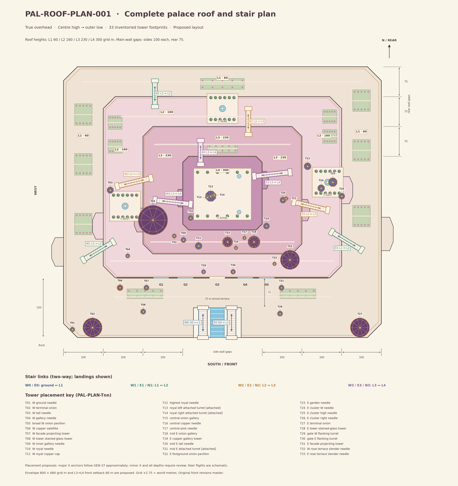

High central wards, terraces descending outward,33 inventoried tower footprints,11 labelled dry staircase links. Coordinate-authored overhead proposal; depths and whole envelope need review.
Dimensions and provenance · 33 tower placements · Stair connections · Layout coordinates · Render evidence
